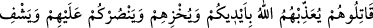
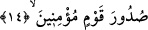
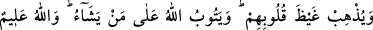

Münevvere’den çıkarmaya yeltenmişlerdir.
“ve size karşı ilk önce” ahdi bozmaya ve savaşa “başlamış olan bir kavme karşı
savaşmayacak mısınız?!” Çünkü Rasûlullah (s.a.) ilk olarak onlara apaçık bir kitab ile
geldi. Onunla kendilerine meydan okudu. Delillerle ona karşı koymaya güçleri
yetmediği için savaşa kalkıştılar. Durum bu olunca onlara karşı çıkıp taarruzda
bulunmanıza ne mâni var?
“Yoksa onlardan korkuyor musunuz?” Kendinize bir zarar geleceğinden mi
korkuyorsunuz da onlarla savaşmayı terk ediyorsunuz? “Eğer” gerçek “müminler iseniz
bilin ki Allah” başkalarından çok “kendisinden korkmanıza daha lâyıktır.” Böyle
olunca Allah düşmanları ile savaşın da O’nun emrini terk etmeyin. Çünkü iman yalnızca
Allah’tan korkmayı gerektirir.
et-Te’vîlâtü’n-Necmiyye’de der ki: Nefisle mücâhede sırasında nefsin hazlarını
kaybetmekten mi korkuyorsunuz? Oysa Allah’ın haklarının ve O’na vuslatın elden
kaçırılıp zâyi edilmesinden korkmak daha evladır. Tabii ki O’na vuslata imanınız varsa.
14. Onlarla savaşın ki Allah sizin ellerinizle onları cezalandırsın; onları rezil
etsin; sizi onlara galip kılsın ve mümin toplumun kalplerini ferahlatsın.
“Onlarla” müşriklerle “savaşın ki Allah sizin ellerinizle onları cezalandırsın” sizin
kılıçlarınızla öldürülsünler “onları rezil etsin.” makhur ve mağlub ederek onları
rüsvay eylesin. “Sizi onlara galip kılsın” sizin hepinizi onların tamamına karşı
muzaffer ve galip eylesin. İşte bu yüzden galibiyet cezâlandırmadan sonraya te’hir
edilmiştir. “ve mümin toplumun” savaşı görmeyen Huzâalılar’ın “kalplerini
ferahlatsın.” şifa bahşetsin.
İbn Abbas (r.anhümâ) der ki: Bunlar, Yemen ve Sebe halkından bir gruptur ki
Mekke’ye gelip İslâm’ı kabul ettiler de Mekke müşriklerinden bir çok eza ve cefa
gördüler. Durumlarını şikayet etmek üzere Rasûlullah (s.a.)’e elçiler gönderdiler.
Efendimiz (a.s.): “Müjdeler olsun size. Kurtuluş yakındır.”[99] buyurdu.
Hâfız der ki:
Yaşlandığım halde Yûsuf sohbetiyle gönlümü şâd etti
Bu, hüzünler kulübesindeki sabır ve tahammülümün eseridir